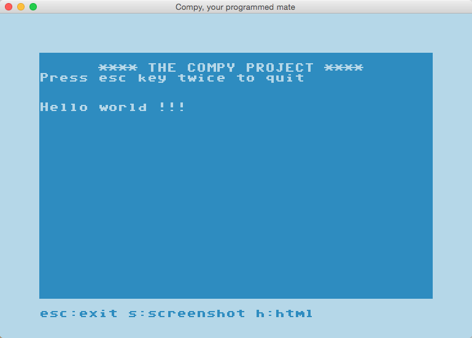
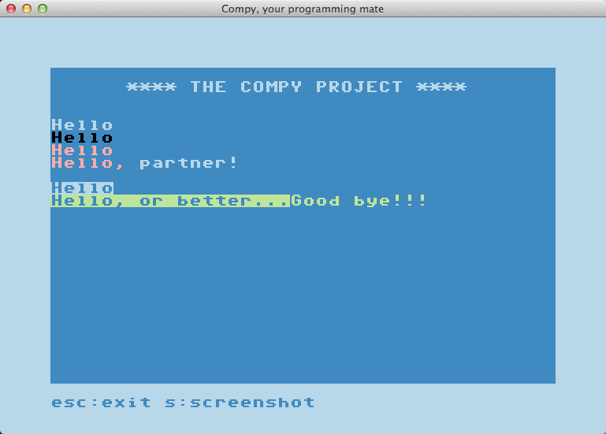

Examples
Here we show you examples of the commands you can issue to the Compy screen.
Print "Hello world"
Result:

Code of 'print_hello_world.py':
import compy
def main(sc):
sc.printf('Hello world !!!')
compy.run(main)
sc.printf options
Result:

Code of 'printf_options.py':
import compy
def main(sc):
sc.printf('Hello')
sc.printf('Hello', color='black')
sc.printf('Hello', color=4)
sc.printf('Hello, ', next_line=False)
sc.printf('partner!', color=0)
sc.printf()
sc.printf('Hello', reverse = True)
sc.printf('Hello, or better...', color='light-green', reverse=True, next_line=False)
sc.printf('Good bye!!!')
compy.run(main)